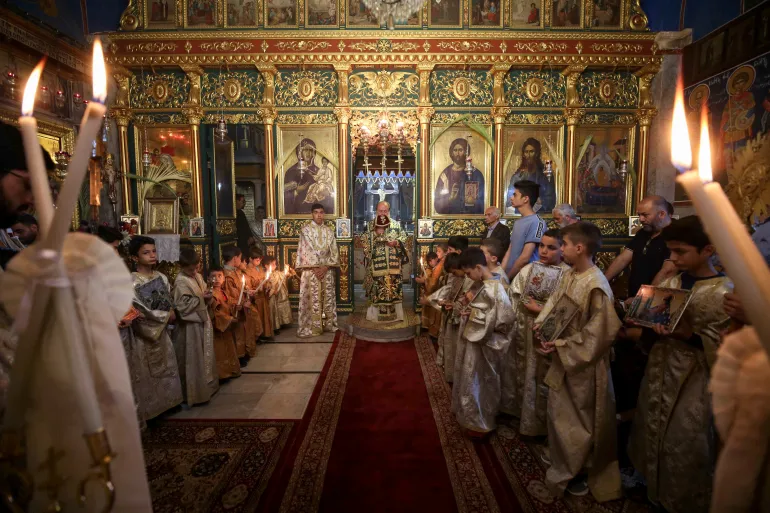

A nun prays during Easter Mass at the Holy Family Church. Dawoud Abu Alkas/Reuters
Nov. 9, 2024
When Khalil Sayegh thinks back to his childhood in the Gaza Strip, the Greek Orthodox Church of Saint Porphyrius looms large in his memory.
Sayegh, now 29, remembers the weddings, the Sunday School classes, the music lessons and the visits to the tiny graveyard.
These days, Sayegh lives in Washington, DC, where former President Donald Trump will retake power in January after beating Democrat Vice President Kamala Harris in the United States presidential election this week.
Trump’s political comeback has added a new layer of uncertainty for Palestinians – not just those inside Gaza, which Israel has subjected to near-relentless bombardment and ground assaults for the past 13 months – but also those who, like Sayegh, have family there and are watching helplessly from afar.
They have been deeply angered by the current Democratic Party administration’s failure to hold Israel to account for a war which has resulted in the deaths of more than 43,391 Palestinians – and thousands more who are missing and presumed dead under the rubble. More than 100,000 people have been injured and nearly all the enclave’s population of 2.3 million are displaced.
As president of Israel’s mightiest ally, Joe Biden has persisted with his unwavering support for the country, refusing to halt military aid, and Kamala Harris has not strayed from this position.
Many Arab Americans felt compelled to wash their hands of the Democrats in this election and voted instead for the Green Party candidate, Jill Stein, who promised to obtain a ceasefire and halt arms aid and sales to Israel.
Sayegh’s homeland, which now lies largely in rubble and ruins, has been ravaged in the past year by this war, which has been largely funded by the US. Hundreds of thousands of homes have been destroyed while hospitals and schools have been targeted in Israeli strikes.
Palestinian Christians attend Palm Sunday mass in a Greek Orthodox church in Gaza City on Sunday, April 9, 2023 – before Israel’s war on Gaza began (Fatima Shbair/AP)
But Sayegh returns to memories of better times. A member of the Gaza Strip’s small but ancient Christian community, he recalls, particularly, the Divine Liturgy celebrated at St Porphyrius every Sunday – the lengthy, ancient rite blending chanting, incense and prayers in Arabic and ancient Greek
The church and surrounding compound, parts of which date back to the 5th century CE, was a hub for Gaza’s Christian community.
Today, much of it lies in ruins. In October last year, an Israeli air strike destroyed one of the buildings in the compound, killing at least 17 people.
About 400 Palestinians, both Christians and Muslims, had taken refuge there, in the hope that the church would be spared the devastating bombing being visited on the surrounding area.
The church was among a number that had opened their doors to Palestinians fleeing the air strikes, which began on October 7 last year.
On the other side of the city, the Catholic Parish of the Holy Family had also welcomed about 600 of them, among them Sayegh’s parents and two of his siblings.
In December, a few months after the family had arrived at the church, an IDF sniper killed two Christian women, a mother and daughter, as they walked from one building within the Holy Family compound to another. One was shot as she attempted to carry the other to safety.
Then, on December 21, a few days before Christmas, Sayegh’s father, Jeries – traumatised by what he had seen – suffered what appeared to be a heart attack, which eventually proved fatal. He was 68 years old.
“There was no medication left in the compound, and ambulances were not allowed in by the IDF,” Sayegh tells Al Jazeera. “If my father had been able to access medical care, he would still be here today.”
Several months later, tragedy would strike again. In April, Sayegh’s 18-year-old sister, Lara, died – apparently from heatstroke – as she attempted to flee Gaza via the southern border.
Lara was travelling with her mother to Egypt, where she hoped to find safety and enrol in university. The pair had obtained the necessary permits, and were travelling on what Israeli authorities described as the “safe route” – which involved a seven-kilometre hike on foot with no access to water or medical facilities, supervised by armed drones. The journey proved too much for Lara, who tragically died on the way.
A relative called Sayegh with the news. “My heart was broken,” he says. “In that moment, it was impossible to feel any comfort, even from God.”
How does a person of faith navigate such intense, repeated personal tragedies?
Despair, Sayegh notes, is an element that crops up in much of the Christian theological tradition, as a response to the terrible evils of the world. The Psalms lament that “the afflictions of the righteous are many” while “the wicked spring up like grass.”
But, Sayegh says, Christianity contains another element, too, one even more powerful than despair: belief in resurrection. At the core of the Christian faith is the idea that life has triumphed over death, that good has triumphed over evil – and will continue to do so, even when things appear to be at their bleakest.
A child holds candles during a Palm Sunday service at the start of Holy Week for Orthodox Christians at the Greek Orthodox Church of Saint Porphyrius in Gaza City on April 28, 2024, amid the continuing Israeli bombardment (Omar Al-Qattaa/AFP)
Sayegh was born in 1994, to middle-class Christian parents. He was one of four children, and grew up in Gaza City, in the northern part of the Strip.
Although the family were relatively prosperous, they were in fact refugees, having lost their home in the 1948 expulsions by Zionist gangs and the ensuing war that Palestinians refer to as the “Nakba”, or “catastrophe."
As well as the weekly Sunday services, and the big feasts like Easter and Christmas, Christian life in Gaza revolved around a number of cultural institutions, such as the Arab Orthodox Centre and the Young Men’s Christian Association (YMCA).
Every Thursday, Sayegh would visit the YMCA, and during the summers he would attend camps there.
“It was sort of the centre of young life in Gaza”, he recalls. “It’s where you would go to the gym, play football, play tennis. It’s where you would have fun and build your friendships.”
Until 2005, when Sayegh was 10, thousands of Israeli soldiers were present in the Strip, protecting their illegal settlements there.
Military checkpoints meant that driving from one part of Gaza to the other could take five or six hours, despite the fact that the Strip is only 40km (25 miles) long. Classes in school were often cancelled, Sayegh remembers, when teachers from the south were unable to make it to his school in the north.
There were frequent Israeli air strikes too, and gunfights, particularly during the five years of the Second Intifada from 2000 to 2005.
In 2005, Israeli forces withdrew entirely from Gaza, taking the Israeli settlers with them. Over the following years, the armed political group Hamas, which had never previously had control of the Strip, came to power.
The ascension of Hamas was a worry for the Christian community, says Sayegh, but in the end they were surprised: Hamas chose to offer protection to churches and other Christian institutions. This was, he believes, mainly a political strategy, a way to improve Hamas’s image in the West – but it also made a real difference, as the group thwarted various fundamentalist attacks on local Christians.
That is not to say there were no problems. Sayegh notes that there was a “gradual Islamisation of the public square” following Hamas’s takeover. “It became quite hard to take part in public life if you were a Christian or even a secular Muslim,” he says.
In late 2008, Israel launched a 22-day land, naval and air bombardment which killed some 1,400 Palestinians, injured thousands and destroyed about 46,000 houses, leaving some 100,000 people homeless.
It was following that disaster, that Sayegh, aged just 14, decided to flee Gaza for the comparative safety of the West Bank. He had obtained a week-long permit to attend Easter celebrations in Jerusalem at the end of which he simply did not return home – his presence in the West Bank thus becoming, in the eyes of the Israeli government, illegal.
“I left by myself, without my parents’ permission,” Sayegh says now. “I was alone. It was very, very hard.”
Amid this crisis, Sayegh experienced what he describes as a “Come-to-Jesus” moment. Although he had been raised an Orthodox Christian, he had never been particularly devout, but in the West Bank he met a number of fervent Palestinian Protestants who inspired him to take his faith more seriously.
Inspired, Sayegh enrolled in the Bethlehem Bible College. He continued his theological studies for four years but began to realise that his passion lay elsewhere, in the field of politics.
“Studying theology in the Palestinian context continually raises political questions,” he says. “I always felt like there was something missing from my analysis.”
It was this interest in politics that eventually led Sayegh to the US, where he now lives. In 2021, he arrived in Washington, DC, to pursue a master’s degree in political science. Then, in the summer of 2023, he was informed that the Israeli government would not allow him to return to the West Bank – he would only be permitted to go to Gaza.
As a result, Sayegh was forced to remain in the US, where he is continuing his studies and working as a political analyst. He is currently applying for asylum.
Sayegh’s story is not unusual for a Christian from Gaza.
The pre-war Christian population of the Strip was about 1,000. At least several dozen Christians have been killed since the war began – equivalent, Sayegh points out, to about 5 percent of the community.
“Everyone I speak to who’s currently sheltering at the St Porphyrius church is looking to leave Gaza,” Sayegh says. “The majority of the houses in the north, where the Christians lived, have been bombed. Everything is destroyed. People have no reason to stay.”
Despite this, many Western Christians – particularly US evangelicals – remain committed defenders of Israel. “We’re used to our brothers and sisters in the West totally ignoring us,” says Sayegh. “It’s not new.”
A notable exception in this regard, he points out, is Pope Francis, who has been appealing for a ceasefire since the earliest days of the war, and calls Gaza’s Catholic parish every day to hear about the situation there.
“I continue to receive very grave and painful news from Gaza,” Francis said at a weekly blessing in mid-December last year.
“Unarmed civilians are the objects of bombings and shootings. And this happened even inside the Holy Family parish complex, where there are no terrorists, but families, children, people who are sick or disabled, nuns.”
Given the situation, says Sayegh, the survival of Gaza’s ancient Christian community “just seems like an impossible task.”
For Sayegh, a way to cope has been advocacy for the Palestinian cause. He crisscrosses the US, meeting with community groups, churches and speaking to the media.
A few years ago, Sayegh founded the Agora Initiative, a nonprofit organisation which advocates for peace between Israelis and Palestinians. He did so together with an Israeli friend, Elazar Weiss, a PhD student at Yale.
The response to their activism has been mostly positive, Sayegh says. Many Americans, he notes, have a limited understanding of the region’s history, and so even learning a few basic facts can help them to grasp the importance of peaceful co-existence and Palestinian rights.
“They appreciate that we do it together,” Sayegh adds, “as an Israeli and a Palestinian.”
Recent events, however, have forced the pair to rethink their operations. “What the current war has made clear,” Sayegh says, “is that you can’t talk about peace and cooperation between Israelis and Palestinians without first delivering justice. That means ending the occupation.”
Sayegh and Weiss are now putting their energy into promoting the Arab Peace Initiative, a proposal backed by the Arab League, which offers normalisation of relations with Israel in return for its full withdrawal from Gaza, the West Bank and the Golan Heights, all recognised as being illegally occupied under international law.
“A ceasefire in Gaza is not enough,” Sayegh stresses. “That’s putting your goal way too low. The Palestinian struggle is not about a ceasefire – we’re struggling for liberation from occupation, for the decolonisation of the West Bank, the dismantlement of the illegal settlements. That’s our goal.”
For now, however, this aim remains a distant one.
At the Church of St Porphyrius, some 400 Palestinians, including Sayegh’s surviving sister, are still taking shelter from the Israeli war. They have little electricity or food, and the church has continued to suffer bombardments.
The YMCA where Sayegh spent much of his childhood, meanwhile, has become a literal cemetery, with many people now buried under the football pitch he once played on.
“The suffering just goes on and on,” Sayegh says. “Right now, there is no end in sight.”
This story has been reproduced as part of coursework for the Philip Merrill College of Journalism at the University of Maryland. It was originally published by Al Jazeera.